Superdry
Influencers, celebrity dressing & #SDMYWAY
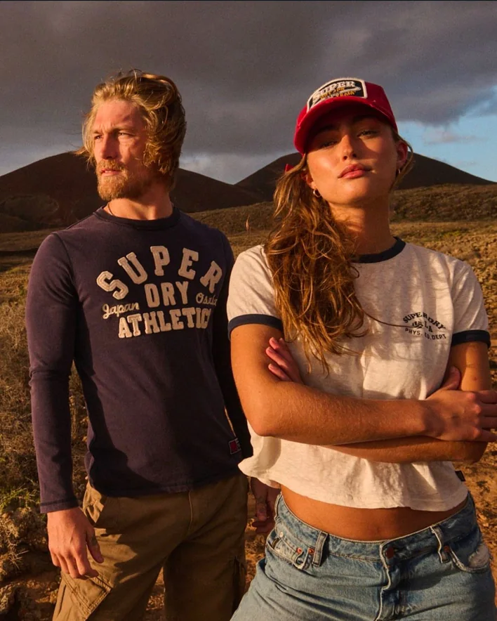
Background
Superdry's identity brings together vintage Americana, Japanese-inspired graphics and British style. Apostrophe partnered with Superdry India across media relations, influencer marketing and activations, celebrity dressing, store launch events and campaign strategy.
Objective
To build awareness of Superdry in India and translate its vintage Americana, Japanese-graphic and British-style identity into culturally relevant content, engaging audiences through fashion and lifestyle creators, celebrity moments and store launches.
Solution
Apostrophe drove Superdry's brand narrative through a strong influencer-led strategy, activating key fashion and lifestyle creators. Influencer collaborations worked hand in hand with celebrity dressing and store launch moments, amplified further through extensive press coverage and targeted media outreach.
- Aditya Roy Kapur
- Aditya Seal
- Kartik Aaryan
#SDMYWAY: Superdry India's First Campaign
In tandem with the brand team, Apostrophe curated #SDMYWAY, Superdry India's first campaign, in collaboration with Kubbra Sait, Jim Sarbh, Aparshakti Khurana, Tahira Kashyap and Guru Randhawa. Built on the tagline “Whoever You Are, Wear It Your Way”, its messaging centred on breaking norms, celebrating individuality and inspiring millennials.
Our role was end to end: conceptualisation and ideation, building a narrative around the brand's key messaging, identifying the right faces and onboarding Man's World as media partner for wider reach.
Impact
The influencer-led strategy translated into extensive press visibility, with coverage across leading fashion and lifestyle publications including GQ, Elle and Grazia, delivering a reach of 60M and a PR value of ₹46M.
For #SDMYWAY, Man's World promoted the campaign across its platforms with a total reach of 1.5M, and all five celebrities shared it on their social media, exposing an audience of 27.7M to the brand's messaging. The campaign also produced personalised content for the Indian fashion market, which the brand ran on its social media handles, its website and across its stores.
Celebrity dressing moments and store launch activations amplified this reach further, placing Superdry firmly within premium media and cultural conversation.
Celebrities in Superdry
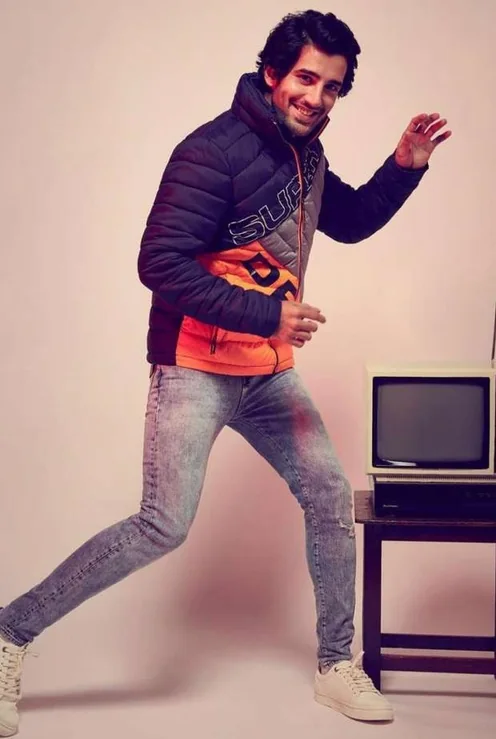
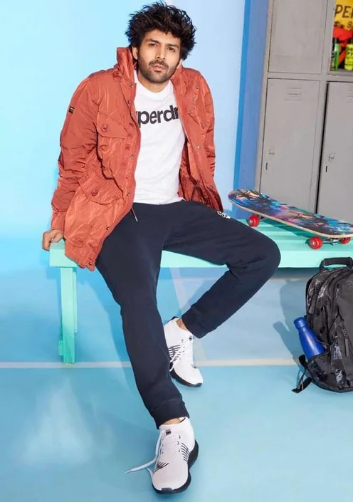
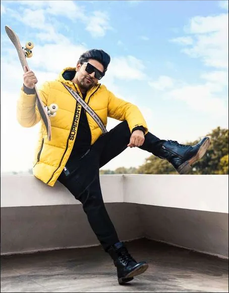
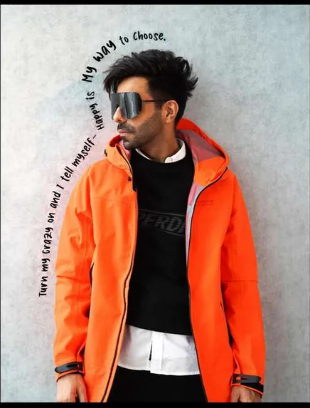
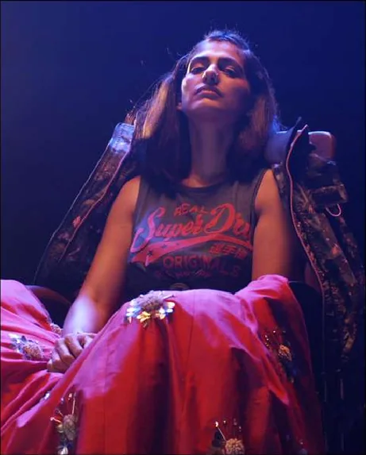
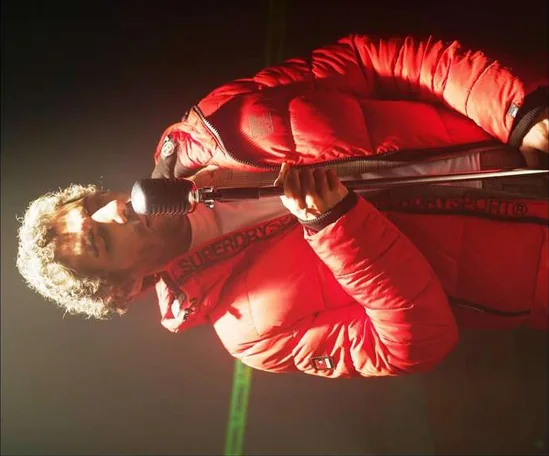
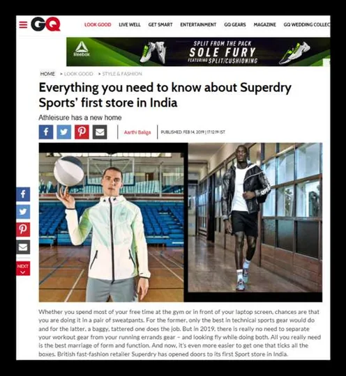
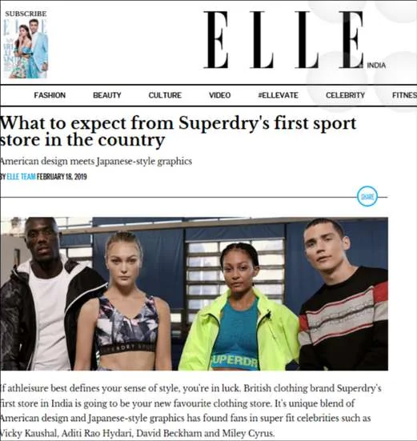
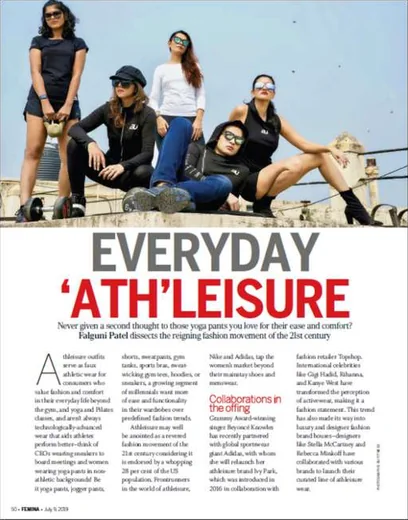
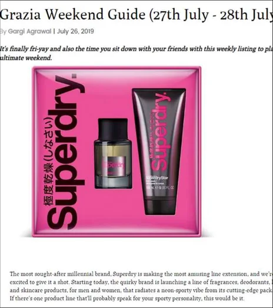